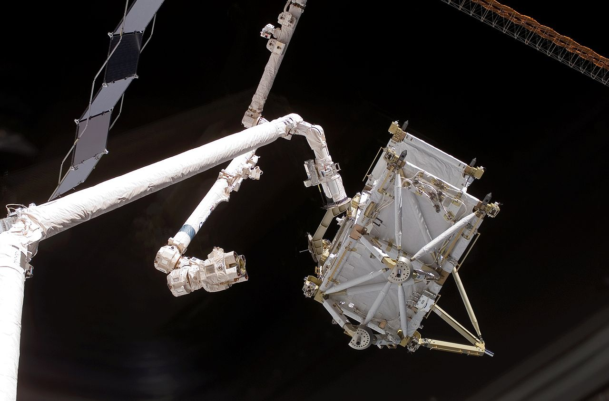

About Space ROS
There are many types of robotic space systems currently in use, and planned for the future. Manipulators, like the Canadarm, that can deploy payloads; humanoid robots, like Robonaut 5, that can perform tasks that require manual dexterity in the hands and fingers; mobility systems, like the VIPER rover, that can traverse planetary surfaces; robotic spacecraft; and robotic landers. In the future, robots will be used for all sorts of tasks, like mining and excavation, maintenance and repair, in-space manufacturing, and site preparation.
The Canadarm manipulator
Increase in Software Complexity
With these various kinds of applications comes the corresponding increase in the overall complexity of the systems, especially the associated software. The amount of software on the robotic systems is increasing at a steep rate. Consider the joystick controlled Lunokohd rover of 1970:

The Lunokhod rover, circa 1970
The amount of code on that rover was certainly minimal when compared to the 2 million+ lines of code required for the Mars rover in 2020. Today, writing custom software for each mission is no longer a viable option as this approach typically results in:
Higher development costs
Minimal code reuse
Time-consuming and costly qualification to meet required safety standards
The result is that there is an increasing demand for software re-use in space systems.
Meanwhile, back here on Earth, the broader robotics community has standardized on ROS, an open source platform for building robotics applications. ROS includes communications middleware, drivers that interface to hardware, state-of-the-art algorithms, and a wide range of developer tools. Implementing a robot for space applications can be greatly simplified by incorporating a robotics framework like ROS. For example, ROS packages like MoveIt2 can plan and execute motion for manipulators, like the Canadarm or the Robonaut with its hands and fingers. Other packages like Navigation2 provide the means for robots to perform dynamic path planning and navigation from point A to point B, while avoiding obstacles.

ROS robots are everywhere on Earth
In addition, ROS is much more than just an open source code base. There is a thriving ecosystem of developers around the world that use and contribute to ROS. ROS is commonly used at the university level for robotics research. While at university, students work on ROS-based robots and become familiar with the APIs, tooling, and packages provided by the ROS ecosystem.

The latest version of ROS, ROS 2, offers a standard software platform built from the ground up for use in production in high reliability and safety critical systems. Previously, with ROS 1, prototype code would likely have to be rewritten to target a production system. With ROS 2, the goal is to be able to leverage early research and prototypes without having to rewrite the code. There are many working groups associated with ROS that help advance it in various ways, including some that are relevant to mission critical systems, like the Safety and Real-Time working groups. ROS 2 can use industry standard DDS implementations as its core communications middleware. DDS is used for high reliability systems such as air-traffic control, autonomous vehicles, medical devices, and power grid management.
Space ROS will be an open source, space-certifiable robotics framework that is designed to meet flight software standards. It will begin as a subset of ROS 2 and will be aligned with aerospace and NASA standards, such as DO-178C and NPR7150.2, so that it can be adopted for high assurance missions. Space ROS will also provide space-specific modules and interface with existing flight software tools and frameworks. Space ROS will address the demand for software reuse in space robotics while bringing the benefits of ROS to space.

Artist’s rendition of the MARS Curiosity rover